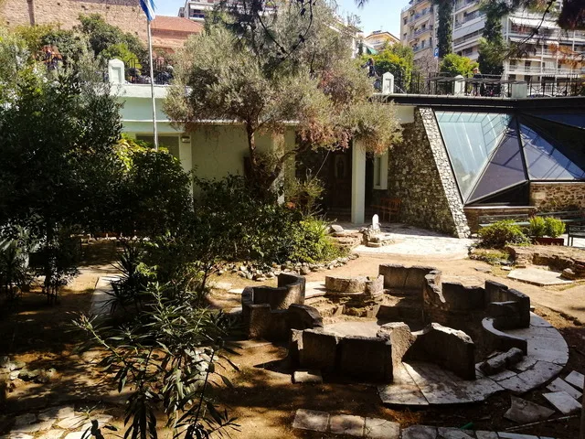
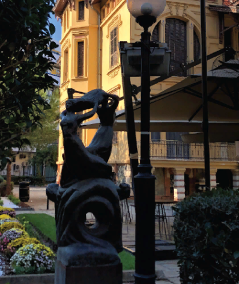

Οι κατακόμβες του Αγίου Ιωάννη του Προδρόμου βρίσκονται δίπλα στον ιερό ναό της Αγίας Σοφίας, στο κέντρο της Θεσσαλονίκης, με τον οποίο μάλιστα μέχρι το 1922 ήταν ενωμένοι. Οι θρύλοι που έχουν διαδοθεί ανά τους αιώνες είναι αμέτρητοι. Ένας από τους πιο διαδεδομένους, ο οποίος έχει επικρατήσει ως τις μέρες μας, είναι πως μετά την καταστροφική πυρκαγιά το 1917, ήταν το μοναδικό σημείο της πόλης, το οποίο παρέμεινε ανέπαφο. Το 1892, οι κάτοχοι του οικοπέδου, έσκαψαν στο σημείο όπου βρίσκεται σήμερα ο ναός, και κατά τύχη εντόπισαν την κρύπτη. Τον ίδιο χρόνο, στη σύντομη ανασκαφή υπό την καθοδήγηση του Πέτρου Παπαγεωργίου, ο οποίος είχε σπουδάσει φιλολογία στην Ιένα, στη Λειψία, την Αθήνα αλλά και το Βερολίνο, ανακάλυψε ένα προσκυνητάρι του 10ού ή του 11ού αιώνα.

Η σύνδεση με τον Πολιούχο της πόλης
Μέχρι τις αρχές του 20ού αιώνα υπήρχε υπόγειo δίκτυο το οποίο συνδεόταν με τον ναό του Αγίου Δημητρίου, όμως κατά την κατασκευή του δρόμου Μακένζυ Κίνγκ έπαψε να υπάρχει. Επίσης, πιθανολογείται σύμφωνα με τα ευρήματα ότι ήταν ο τόπος όπου φυλακίστηκε και αργότερα μαρτύρησε ο Άγιος Δημήτριος, που θεωρείται ο προστάτης της Θεσσαλονίκης.

Ακόμη μια απόδειξη αυτού του γεγονότος είναι μια τοιχογραφία με τρεις επιστρώσεις του 14ου αιώνα. Η εικονογραφία απεικονίζει το πρόσωπο του πωγωνοφόρου Αγίου με σγουρά μαλλιά, και μια επιγραφή “Κύριε μνήσθητι Γεωργίου του Ιορέμη”. Η κόγχη του Ιερού Βήματος της παλαιοχριστιανικής βασιλικής έχει ενσωματωθεί στο υπόγειο της σύγχρονης οικοδομής στην ανατολική πλευρά του ναού.
Παρά την υγρασία που είναι ιδιαίτερα αισθητή στο χώρο, χάρη στα ειδικά έργα αποστράγγισης που έγιναν, σε συνδυασμό με τη γενική συντήρηση του το 1991, από τον Πέτρο Δεβόλη, ο οποίος είναι διακεκριμένος αρχιτέκτονας, γλύπτης και συγγραφέας, τα τοιχώματα παραμένουν στεγνά. Ο ίδιος εξέφρασε αρκετά διαφορετικές απόψεις από αυτές που είχαν διατυπωθεί κατά καιρούς για το ιερό.
Χρήσιμες πληροφορίες
Ο Ιερός ναός Τιμίου Προδρόμου βρίσκεται στην καρδιά της πόλης και δε θα δυσκολευτείτε καθόλου να τον βρείτε. Το μόνο που πρέπει να προσέξετε κατά τη διάρκεια της επίσκεψής σας είναι η ενδυμασία σας. Καλό θα ήταν να αποφύγετε τις κοντές φούστες και παντελόνια, καθώς και τα αμάνικα μπλουζάκια. Αξίζει να σημειωθεί πως ο χώρος δεν είναι εύκολα προσβάσιμος για ΑμεΑ.
Προσβασιμότητα Οι γραμμές λεωφορείων
που σας εξυπηρετούν είναι: 12, 6, 33, 5, 39, 58, 3Κ, αναζητείστε τη στάση «Διαγώνιος».
Τα πιο κοντινά
Γκαράζ για Πάρκινγκ
είναι: Parking Ag. Sofias Διεύθυνση: Γεωργ. Χαραλάμπους Κυπρίου 3, Θεσσαλονίκη 546 22 Parking – Thessaloniki.eu Διεύθυνση: Αγίας Σοφίας 54, Θεσσαλονίκη 546 35
Επικοινωνία: 6972703220 Σταθμός Αυτοκινήτων Βήκας Διεύθυνση: Αγίας Σοφίας 54, Θεσσαλονίκη 546 35
Ωράριο λειτουργίας : Καθημερινά 7:30 – 12:30 και 17:00 – 18:30
Θεία Λειτουργία 8:00-10:00:
- Κάθε Τρίτη
- 1η Κυριακή του μήνα
- 2η Κυριακή του μήνα
ΠΤιμή εισιτηρίου: ελεύθερη είσοδος
Διεύθυνση: Μακένζι Κίνγκ, 54622 Θεσσαλονίκη
Επικοινωνία: +30 2310 238984

Post Views: 156
ΑφΗστε Ενα ΣχΟλιο
Η ηλ. διεύθυνση σας δεν δημοσιεύεται. Τα υποχρεωτικά πεδία σημειώνονται με *